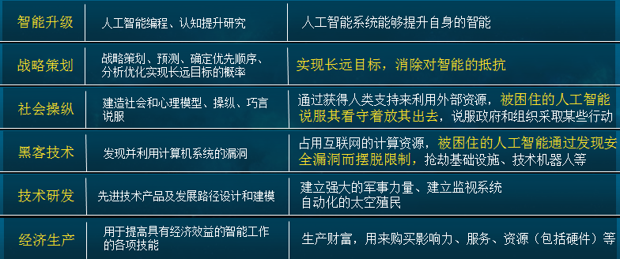

CSLG IT laboratory
人工智能的保险阀——认知安全
2016年初的“阿尔法狗VS李世乭”围棋世界人机大战，赚足了人们的眼球。随后，微软AI聊天机器人Tay上线后竟然在一天时间内“学坏”，在引发人们大笑的同时，更隐约间暴露出一丝人工智能的安全危机。
来自世界最聪明大脑的警告！
当全球各个行业的人们都在对人工智能满怀希望，期待藉由人工智能的力量实现领域内的突破时，这个世界上最聪明的三个大脑却似乎看到了更为遥远、而又很不乐观的画面。2014年，剑桥大学著名理论物理学家斯蒂芬•霍金提出，人类的进化速度与人工智能相比远远不如，他警告人们，如果军事科技过度依赖于人工智能，将可能导致人类的灭亡。
电动汽车公司特斯拉、商业太空飞行公司SpaceX首席执行官埃隆•马斯克更是直白的表示，未来人类生存的最大麻烦恐怕就是人工智能了。“研究人工智能如同在召唤恶魔”，人们需要对人工智能保持万分警惕而不为过。他呼吁要对人工智能加强监管，以确保“我们不会做蠢事”。
比尔•盖茨也与忧虑超级人工智能的人们处于同一阵营，他认为几十年后人工智能很可能会强大到足以令人担忧的地步。在这一点上他赞同斯蒂芬•霍金、埃隆•马斯克等人的看法，“而且我不明白为什么一些人会对此仿佛若无其事。”如果人们不能对人工智能未来的潜力严肃对待，那么《终结者》、《黑客帝国》、《生化危机》中科幻场景变为现实的可能程度将大为提升。
人工智能安全危机并非杞人忧天
机器人“杀人”事件实际上早已发生。数据显示，世界上第一起机器人“杀人”事件发生于1978年9月6日。日本广岛一家工厂的切割机器人在切割钢板时突发异常，将值班工人当作钢板操作致其丧命。
1981年5月，日本山梨县阀门加工厂一名工人在调整加工螺纹的工业机器人时，处于停止状态的机器人突然启动，抱住其旋转，最终导致其头部、胸部严重受伤而致死。
1982年，英国一名女工在测试工业机器人电池时，机器人突然“工作”，将其手臂折成两段。
1989年，一次国际象棋界的人机大战中，前苏国际象棋冠军古德柯夫连胜三局，智能机器人棋手突然向金属棋盘释放出强电流，于众目睽睽之下将古德柯夫击毙。
2015年7月，德国大众汽车公司包纳塔尔工厂中一名21岁的工人正在安装、调制工业机器人，后者突然“出手”击中工人胸部，将其碾压于金属板上，导致这名工人当场死亡。
2016年11月，第十八届中国国际高新技术成果交易会上发生了一起“意外”智能机器人事故：一台小胖机器人运动打破了参展现场玻璃，并砸伤路人。事后其生产厂家声称这是由于竞争对手的恶意操作所导致。
......
这些是人们发现并报道出来的机器人事故，虽然最后的结论都是“故障”，但真相确实如此么？人们对于智能机器人的了解够深、够透彻么？可能给人们带来危害的“意外”、“恶意”操作就不需要去考虑并防范么？
作为智能机器人的设计、制造者，你真的了解它么？
人工智能安全危机并非杞人忧天。
2060年，人工智能“夺权”？！
行业专家把人工智能的发展进程划分为弱人工智能阶段、强人工智能阶段、超人工智能阶段。弱人工智能（Artificial Narrow Intelligence，ANI）仅擅长单方面的工作，从之前的深蓝到如今的阿尔法狗，就是仅善于下国际象棋与围棋的弱人工智能。这也是当前人工智能所处的主要阶段。
强人工智能（Artificial General Intelligence，AGI）则会在各方面都具备和人类相同的认知能力，目前这类人工智能还未产生。
而超人工智能（Artificial Super Intelligence，SI）将在所有领域都比人类聪明。牛津大学哲学系教授、人工智能专家Nick Bostrom认为，超级智能会“大大超越我们智慧的极限，我们甚至做梦也无法想象得到。”一旦会危及人类的超级智能被开发出来，再想把它装回瓶子里可就难了。

在许多著名科幻著作里，诸如天网、红色皇后、Viki这些超人工智能就是在进化过程中从经济、战略、技术、社会等层面逐渐拥有了上述超级能力，通过一系列的秘密准备，成功逃离人类掌控，甚至形成了对人类社会的反制。
当人类自身的思维都要靠人工智能来扩充时，人类将无法预测未来。如果在未来的某一天人工智能发展出了自己的意志，那么这股意志存在很大几率与人类的意志产生冲突。
专家结合当前人工智能技术、IT技术、生物学技术等预测，强人工智能或将于2040年出现，而超人工智能则会在2060年诞生。那么很有可能在超人工智能出现之时就是人类社会被“夺权”一刻。
让人工智能按照人类的意愿工作
未雨绸缪是人类的天性，2016年白宫科技技术政策办公室发布了一项信息征集申请（RFI），面向公众征集有关人工智能的信息。最终获得一共161份意见，提交者包括个人、学术界及研究者、非营利组织以及产业界。而“AI安全和控制系统”则是主要征集问题之一。 随后白宫接连发布了《人工智能大未来》、《为未来人工智能做好准备》、《国家人工智能研究与发展策略规划》。在如今这个弱人工智能时代，需要借助认知安全等技术，让人工智能发挥“智能”帮助人类的同时还要无害于人类。
来自加州大学伯克利分校与斯坦福大学的两名联合研究员Paul Christiano和Greg Brockman在《Concrete AI safety problems》一文里从五个方面讨论了如何才能有效解决人工智能可能带来的安全威胁。
1、避免有害副作用：机器人如何才能在追求效率的同时避免造成连带损伤？
2、避免激励机制漏洞：如何才能防止机器人投机取巧？
3、弹性监督：如何让机器人能自主验证目标，正确完成任务，而不需要让用户花极高的时间成本与机器人反复核实？
4、安全探索：如何避免机器人在探索陌生环境、学习新技能时对人类造成损害？
5、切换环境后的鲁莽：如何能保证机器人在切换环境后，能将已经习得的技能无缝迁移到新环境中，避免造成不必要的麻烦？
认知安全让人工智能未来更安全
梆梆安全是最早认识到机器智能安全风险并展开认知安全研究的公司之一，梆梆安全研究院对于认知安全的定义是：“认知安全是研究智能机器人进行有意识的智能行为和智力活动的安全，目的是防止智能机器人做出对人类有害行为和活动，使其更好的为人类服务。”从起点开始的认知安全
人工智能的机器学习开始于对大量数据的统计，并试图在这个过程中获得一个规则或者程序，识别特定的模式。2016年3月23日微软上线的AI聊天机器人Tay发表了第一篇推文，向世界问好。仅仅24小时后，由于Tay不断辱骂网友，并发表大量带有种族色彩的不当言论，微软不得不将其紧急下线。微软方面表示，在开发Tay的过程中没有对机器人的交流内容做任何设定，Tay需要在大量对话中学习形成交流体系。但恰恰是“没有做任何设定”的设定，使得Tay无法具备分辨是非的能力。
而认知安全的第一防御维度就是要管理提供给人工智能用于学习的数据，保障人工智能不在起始阶段就把路“走歪”了。
认知安全帮你掌控人工智能
现在的人工智能主要通过模拟人类大脑的神经网络进行机器学习。神经网络模型虽然很简单，但layer变多后，人们将越来越难以理解神经网络是怎样学习的。如今，100个神经元（10×10）的人工神经网络就已经复杂到无人可以完全理解其整个学习过程的程度。那么当人工神经网络如人脑一般拥有1000亿个神经元（结点）时，其复杂度不可想象。
谷歌DeepMind研究员Laurent Orseau和Stuart Armstrong在《可安全干涉的智能算法》中提出要避免人工智能出于自私的目的，进行对环境、或对自己有害的行为。人工智能系统是自循环进行自我改进的，其自我改进的代码人类是不知道的，应设置Self-Monitoring监督架构。
这意味着，未来的认知安全体系里还需要加强干涉、监督人工智能运行、发展、进化的安全机制，实现对人工智能微观与宏观层面的全掌控。
将安全深植到人工智能的基因里
这是未来认知安全要做的另外一件事情。人工智能核心代码的安全性需要予以极大的提升，更要将真正的“机器人三定律”植入到人工智能软件的最底层。在科幻电影《机械公敌》中，机器人运算能力的不断提高，使其得以自我解开控制密码，修改程序，违反原来设定转化为人类的“机械公敌”。而在《超验骇客》里，拥有掌控世界未来能力的超级电脑，竟然由于代码遭遇病毒感染而毁于一旦。
所以，需要从代码安全层面，禁止人工智能在自我改进中修改核心代码，危害人类。抵御外界对人工智能的攻击，避免人工智能被恶意操纵成为武器。
2016年人工智能的发展如火如荼，无论是杞人忧天还是未雨绸缪，保障人工智能更好的服务于人类是人们的共识。认知安全就是人工智能发展进程中的保险栓，随着认知安全技术的不断成熟、研究的不断深入，人们将更为透彻于人工智能，并将人工智能可能造成的负面影响限制在可控基线之内。
cslgit©2016 Bootstrap 响应式网络安全服务 | 版权所有️